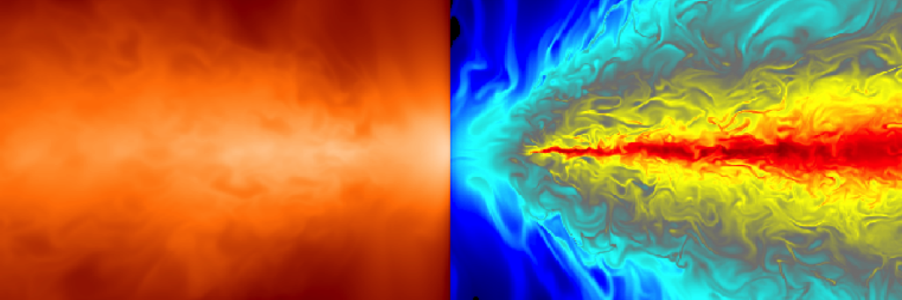

The research of our group is primarily focused on developing and applying computational tools to astrophysical systems. We specialize in methods for solving radiation transfer and radiation hydrodynamics in a variety of astrophysical environments. Current research includes applications ranging from Lyman alpha radiation tranfer in exoplanet atmospheres, cosmic ray and radiation magnetohydrodynamic driven galactic outflows, black hole accretion and outflows, and many other problems in high energy astrophysics.